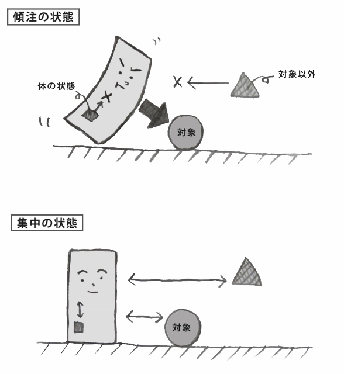

| 「やる気スイッチ問題」大研究！ | |
| 金田かえで | |
| (2018) | |
「きれいな部屋に住みたいけれど、片付けるのがメンドクサイ...」
「英語の勉強をしたいけれど、やる気がおきない...」
そんな、「やりたいけれど、やる気がおきない、面倒くさい...」という状況を、あなたもいちどは経験したことがあるのではないでしょうか？
また、今やっている仕事・生き方になんとなく疑問を感じるけれど、いざ「自分は一体、何がしたいのか？」と考えると、答えに詰まってしまう...。
「自分はコレ！」という、人生をかけて打ち込めること・夢中になれるものがないと、生きている意味がないような焦りとともに、自分探しをしている、そんな方もいらっしゃるかもしれません。
本書では、これらの問題について、頭で考えるだけでなく、具体的な実践・観察を踏まえて、とことん向き合ってみたいと思います。
ぜひ、読むだけでなく、本書で紹介している実際アイデアに取り組んでみて、自分の「やる気」を興味深く観察してみてください。
本書が、心のなかでくすぶっている「やる気スイッチ問題」からフッと抜け出すためのヒントになれば、幸いです。
何かをしようと思って、やる気が起きないと、「自分はなんてダメな奴なんだろう」と思ってしまうこと、ありますよね...。
たとえば、台所の洗いものが溜まっていて、洗わないといけないけれど、どうしても面倒くさくて、テコでも動きたくない。
そんなちょっとした日常的な活動すらサッサとできない自分は、もっと大きな仕事もできるはずがないし、相当ダメな奴なんじゃないか...と思ってしまったり。
せっかくの休日、いろいろやりたいことリストを作っていたのに、結局だらだらと過ごしてしまい、ひとつも実行できず、貴重な時間を無駄にしてしまった自分にガッカリしたり。
そういう時、「自分は皿洗いすらできないダメな奴」、「やりたいこともできず、だらだらしてしまうガッカリな奴」と固定的に決めつけてしまっていませんか？
でも、ちょっと待ってください。
よくよく思い返してみると、同じ活動でも、「やりたくない自分を無理やりテコで動かさないとできないとき」と、「あまり苦もなくスッとできてしまうとき」というのがあるのではないでしょうか？
同じ皿洗いでも、もうどうにも面倒くさくて、嫌で嫌でしょうがないときもあれば、自然にスッと取り組めて、次々に洗ってしまえるときがあったりする。
そう、やる気は変動 するのです。
皿洗いでなくてもよいのですが、ご自分の経験のなかで、同じ活動なのに、ある時はすごく苦しい努力をしてやる気のなさを克服しなければならなかったけれど、別の時はすんなりできてしまった、そういったことが一度や二度はあるのではないでしょうか。
たとえば、出かけるのがどうにも億劫なときもあれば、気軽に出かけられることもある。
料理をするのが面倒なこともあれば、なんの苦もなくできてしまうこともある。
やる気が起きないときに、「自分はダメな奴」と思う前に、そうした事例を思い出してみてください。
自分は、「いついかなるときも 、やる気が起きないダメな奴」ではない のです。「今、たまたま、その活動について」やる気が起きていないだけで、別のタイミングでは、楽々できることもあるのです。
やる気が出ないときにはぜひ、自分をダメ出ししたり、無理やり鼓舞しようとしたりするのではなく、まず、「やる気は変動するものである」、「この活動について、たまたま今やる気が起きないだけであり、楽々できることもある」ということを、過去の具体的な事例とともに、思い出してみてください。
このことが、一体どういう効果を生むのでしょうか？
前著「『肩こり』から人生が変わる！」では、いったん症状を緩和させてもすぐにぶり返してしまう肩こりの慢性化には、「集中」・「傾注（けいちゅう）」という「心の姿勢の違い」が大きく関わっているのではないか、という観点から、さまざまな実践法をご紹介しました。
実は、「やる気問題」にも、同じことがいえるのです。
＊ ＊ ＊
この「集中」と「傾注」の違いは、日本初のヨガ行者ともいわれ、武道の達人でもある、中村天風（てんぷう）の教えです。
「集中」というと、「他のことには目もくれず、一心不乱に、何かにまい進する」というイメージがあるかもしれません。
たとえば、疲れていることも、喉が渇いていることも忘れて、仕事をバリバリこなしている状態」。...これは一見、「集中している」ように見えるのではないでしょうか。
しかし、実はこの状態は、「対象にとらわれ、自分の軸を見失っている状態」であり、最高のパフォーマンスを発揮する「ほんとうの集中」とは、全く違う のです。
自分という軸が対象に「傾」き、対象にとらわれたように注意を「注」いでしまっているので、この状態を「傾注（けいちゅう）」といいます。
武道でいえば、「攻撃してくる相手」に意識が固定化してしまい、周りが見えなくなって、冷静な対処ができなくなっている状態。
まさに、「対象の側に自分が傾いている」、「対象に自分が持っていかれている」イメージ。そう考えると、集中というより「執着」に近いといえるかもしれません。
このような状態では、対象と自分が「対立」した関係になり、体も心も緊張してしまいます。しかし、私たちは、得てしてこういう状態を「集中している」かのように考えていることが、あるのではないでしょうか。
これは、武道に限ったことではありません。私たちが何か、たとえば仕事などに取り組んでいるとき、知らず知らずのうちに、対象に自分が持っていかれていることはないでしょうか？ そして、そのときの体や心の緊張状態はどうなっているでしょうか？
これに対して、「ほんとうの集中」とは、合気道の先生に言わせると、「対象をよく把握しているけれど、それにとらわれない状態」 です。

合気道の道場では、この「集中」と「傾注」について、実体験を通じて理解することができました。
ちょっとした意識の使い方の違いで、おもしろいように相手の体勢を崩すことができるのです。
たとえば、相手が自分の腕につかみかかってきたとき、そのつかまれた腕だけに意識を固定させてしまうと、私たちは大抵、つかまれた腕だけをなんとか動かそうとします。しかしこれでは、相手はびくともしません。
このとき、「心を鏡のようにする」イメージを持って、全体をありのままに把握するよう心がけると、相手の体全体に意識が向いて、うまく相手の体勢を崩す方向に技をかけることができます。相手が体勢を崩すので、結果として、つかんでいた腕も自然と外れていくのです。
このことについて、「やる気」の問題に応用して考えてみると、どうなるでしょうか？
同じ活動でも、抵抗なくスッとできるときは、心が何かひとつのことにとらわれることなく、自由な状態 なのではないでしょうか。
反対に、やる気が出ないときというのは、「やらなくては...」、「でもやる気が起きない...」、「そんな自分はダメだ」、「なんとかやる気を出さなくては」という気持ちに、意識が固定化されて、身動きが取れなくなっている のではないでしょうか？
合気道でいえば、つかみかかってきた相手の腕だけに意識が固定化されて、自由に身動きが取れなくなっている状態と同じです。
「やらなきゃ」という考えに意識を固定化したり、「やる気を無理やり矯正しよう」という対立的なアプローチをとることで、かえって、自由に身動きがとれない方向に行ってしまい、ますますやる気が出なくなってしまう のです。
今度、やる気がどうしても起きないときは、自分の心の状態が、そういった考えで固定化され、自由に動けなくなっていないか、観察してみてください。
「やる気が起きない」という現象そのものよりも、「やらなきゃ...」、「でもできない...」という固定化された気持ちや、やる気を無理に矯正しようとする対立的なアプローチが、苦しみを産んでいるのかもしれません。
それでは、このガチガチに固定化されて自由に動けない状態から、スッと自由に動ける状態に持っていくには、どうしたらいいでしょうか？
それは、自然な動きを阻んでいる、「やらなくては...」、「でもできない...」、「そんな自分はダメだ」、「やる気を出さなくては」という固定化された考えを、いったんクリアにする、とらわれるのをやめることです。
つまり、「無理にやる気を出そう」とすることをやめることで、自由に動けるようになり、結果的には、やる気が出てくるという逆転の発想 です。
とはいっても、具体的には、どうしたらよいのだろう...？と思うかもしれません。
やる気を曇らせている気分をとりあえず一掃する方法として、私自身が実践していることのひとつに、「私は、本件については、適切な時期にやる気が出る」と決めて、いったん脇においておく 、というのがあります。
このようなやり方は、「やろうと思っていることを先延ばしにしている」ように思えるかもしれませんね。
しかし、機会があったら、騙されたと思って、実際にやってみてください。
どうしてもやる気が出ない状況と苦しい取っ組み合いを続けているよりも、そこからスッと離れて、自由な動きができるようになると、そのときに一番必要なことに自然と取り組むことができ、最終的には、自分がやりたいと思っていたことにも最短距離で行けたりするものです。
私の友人が、こんなエピソードを紹介してくれました。
引っ越しの片付けをしなくてはならないのに、全くやる気が起きない。ぶっちゃけ、片づけをするよりも、美容室に行きたい...。
こんなとき、私たちは、「こんなに忙しいときに美容室に行くなんて、ダメダメ！」と、美容室に行きたい気持ちを打ち消して、片付けのやる気を無理やり出そうと努力します。
または、「まずはしなければいけない片付けをしたら、ご褒美に美容室に行こう」という作戦で、なんとかやる気を鼓舞できるのではないかと考えたり。
しかし、この方法では、心が「片付けをしなければ」、「やる気を出さなければ」ということに固定化（傾注）してしまい、かえって自由に身動きがとれなくなってしまうのです。
そこで彼女は、そうした気持ちを全て投げ打って、まず美容室に行きました。
するとどうでしょう。
美容室に行って、素敵な髪型になり、テンションが上がって、あんなにやりたくなかったはずの片付けが、やたらとはかどったそうです。
この出来事は、単なるそのときの気まぐれというわけでもなく、「片付けをしなくては！」、「でも美容院に行きたい」、「そんなのダメだ」という、ガチガチに固まった考えをいったん手放すことで、自由にスッと動けるようになったといえるのではないでしょうか。
「私は、本件については、適切な時期にやる気が出る」と決めたら、そのとき一番気になっていて、かつ、抵抗なくできることを、とりあえずやってみる。
それは、自分が自由に動ける状態を取り戻すことであり、遠回りのようでいて、いちばんの近道なのかもしれません。
このときに重要なのは、無理やり、やせ我慢的に、そう思おうとするのではないということ。
「お皿を洗うとき、テコでも動かないほどやりたくないときもあれば、スッとできるときもある」といった、「やる気の変動の具体例」をきちんと思い起こして、自分で納得することが大切 なのです。
やる気が変動している具体例があるのだから、いま取り組もうとしていることも、今よりも苦しまずにスッとできるときがあるはずです。
このとき、線路のポイント切り替えのようなイメージを持ってみると考えやすいかもしれません。
今やる気がない状態だったとしても、ガチャッと路線が切り替わったら、線路の先には、確実にやる気が出ている自分がいる のです。だから、安心して、やる気の出ない自分との取っ組み合いから自由になってよいのです。
以上のことを言いかえれば、「気の進まない努力」は、やっても逆効果。
だったら、気の進まないことは、やりたくても永遠にできないのだろうか...というと、そういうことではありません。
前にもいったように、やる気は変動するのです。同じ活動でも、気が進まないときと、そうでもないときがあります。
「その時」やりたくないことは、しなくていい、むしろしてはいけない。気の進まないことを、無理やりやろうとすると、自由な動きを封じてしまうからです。
かといって、永遠にやりたくない状態が続くわけではないのです。むしろ、そういう葛藤から抜け出したときにはじめて、自由に行動できるようになります。
「思考は現実化する」という言葉がありますが、同じような感覚で、「やる気は変動する」と思って、たまたま今のタイミングでやる気の起きていないだけの自分を、深刻に考えすぎないことが大切 です。
思い出してみてほしいのですが、これまで何かがうまくいったとき、「いやいやする努力」をしていたでしょうか？ 試験に合格したとき、仕事でうまくいったとき、新しい何かを学んだり身につけたとき...。
すごくたくさん勉強をしたり、仕事に邁進したり、傍目からみたら、非常に「努力」しているように見えていたかもしれません。
しかしそれは、「気が進まない努力をする」とか、「無理やりやる気を出そうとして頑張っていた」というものではなかったはずです。 無理に頑張るというよりは、楽しい・充実した気分だったのではないでしょうか？
傍目には「努力」、「頑張っている」と見えることでも、二種類あるのです。「気の進まない、無理やり頑張る努力」と、「自然に楽しく取り組める状態」。
あなたが今取り組んでいる状態は、どちらの状態でしょうか？
「気の進まない、無理やり頑張る努力」になっているとき、それは、何かの考えに縛られて自由に動けなくなっているというサインかもしれません。 そうした固定的な状態からフッと抜け出すと、同じ活動でも、もっと自由に楽しく取り組めるようになるかもしれません。
具体的な実践のアイデアを、次の第二章でご紹介していきたいと思います。
これまでご説明してきたことをまとめると、やる気が出ないからといって、無理にやる気を出そうとするのは、かえって自分をがんじがらめにして、逆効果であるということ。
反対に、「無理にやる気を出そう」とすることをやめることで、自由に動けるようになり、結果的には、やる気が出てくるという逆転の発想を持ってみるということです。
このことについて、言葉で説明するだけでなく、実践を通じて体験してもらうことで、より理解が深まるのではないかと考え、ここでは、いくつかの簡単に実践できるアイデアをご紹介します。
といっても、もちろん、この本の趣旨からいって「無理にやる気を出して」取り組む必要はありません...！
気が向いて、ちょっとやってみようかな？と思ったら、気軽に取組んでみていただければと思います。
皿洗い、洗濯、掃除、買い物、外出...。なんでもよいのですが、同じ活動でも、おそろしいほど心の抵抗があって大変なときと、あまり苦もなくスッとできるときがあるという経験はありませんか？
そういう事例を、思いつくだけ集めてみましょう。
そして、何かをしようとしてもやる気が出ないとき、これらの事例を思い出して、「やる気は変動するんだ」ということを再確認してみてください。
そうすることで、「できない自分」という固定的な考え方から、フッと離れることができるかもしれません。
第一章にも記しましたが、試験に合格したとき、仕事が成功したとき、新しい何かを学んだときなど、人生の中で「うまくいった」と感じたとき、果たして、「気が進まない努力をする」とか、「無理やりやる気を出そうとして頑張っていた」ということがあったでしょうか？
傍目からみたら、非常に「努力」しているように見えていたかもしれないけれど、「気の進まないことを無理に頑張る」というよりは、楽しい・充実した気分だったのではないでしょうか？
これまでの人生のなかで、そのような出来事がなかったか、思い出してみてください。
試験に合格したとか、仕事で成功したといったことだけでなく、趣味の活動をしていたら、あっという間に時間が過ぎていて、気づけばおそるべき集中力を発揮していた、といったことがあるかもしれません。
そういう状態こそが、固定した考えから自由になり、自然に動ける状態なのです。
趣味の活動で、非常に高い集中力が発揮できたというと、もしかしたら、それが「好きなこと・やりたいこと」だからこそ、やる気も出て、集中力が発揮できたのではないだろうか...？「やらなければいけない仕事」については、同じようにはいかないのではないか...？と思うかもしれませんね。
でも、「好きなこと・やりたいこと」であっても、やる気が起きないことは多々あります。
好きなことであっても、「うまくできるだろうか」とか、「こんなことをやっても意味がないのでは」といった固定的な考えに縛られて身動きがとれない、というように、やはり原因は同じなのです。
洗濯や掃除、勉強をしようとしているということは、少なくとも「やりたい」という気持ちはあるということ。自分を縛っている固定された考えから抜け出せば、もっと自由に動きだせるはずです。
何かをしようとして、やる気が起きないとき。
【実践２】の「うまくいっているときは、気の進まない努力ではなく、楽しく取り組んでいた」ということを思い起こし、
【実践１】で収集した「やる気は変動する」という事例を思い出して、「今やりたくないのは心が固定化して自由に動けないだけで、自然にスッと取り組めるときもある」ということを実感を持って確認したら、
「本件については、適切な時期にやる気が出る」と決めて、いったん脇におき、その時一番気になっていることで、抵抗なく取り組めることをやります。
目の前の花瓶の花がしおれているのが気になっていたら花瓶の水を変えるとか、疲れているのであれば思い切って昼寝をしてしまうとか、取り組もうとしていることと全く関係なさそうなことでよいのです。
「美容院に行ったら、結果として片付けがはかどった」事例のように、一見遠回りに見えることが近道になった事例を思い起こしてください。考えが固定化され、自由に動けない「傾注」の状態から抜け出すことができれば、楽に動くことができるようになるのです。
もしかしたら、「何かをしたくてもやる気が起きないので、漫然とテレビを見続け、結局できなかった」という場合もあるのではないか、と思うかもしれません。
これは、「やらなきゃ」、「でもできない」という気持ちと取っ組み合いを続けたまま別のことをしている状態 なのです。別のことをしていたとしても、心はそのことにガチガチにとらわれたまま なので、「美容院に行ったら、片づけがはかどった」例とは、心の状態が大きく違うのです。
取り組もうとしていることをいったん脇において別のことをするときは、（１）「やる気は変動する」ということを、具体例を思い起こしてきちんと意識することと、（２）「適切な時期にやる気が出る」と決めることが、大切なポイント です。
そうはいっても、「適切なときにやる気が出る」とうまく思うことができないときは、第一章でご紹介した、線路のポイント切り替えのイメージ をしてみてください。
今やる気がない状態だったとしても、ガチャッと路線が切り替わったら、その線路の先には、確実にやる気が出ている自分がいるのです。だから、安心して、やる気の出ない自分との取っ組み合いから自由になってよいのです。
もしくは、次の方法を試してみてください。
これは、前著「『肩こり』から人生が変わる！」でもご紹介した、いつでもどこでも、固定された考えを自動的にフッと手放すことができる、とても手軽で効果的な方法です。
できれば目をとじて、まずは、手首に指を当てるなどして脈柏を感じます。
次に、脈拍を意識したまま、ゆっくりと呼吸をして、呼吸にも意識を向けます。
さらに、脈拍と呼吸に意識を向けたまま、耳から聞こえてくる背景音（話声などの背景にある、空調の音、雑音など）にも意識を向けます。いずれも「心の鏡に映す」イメージです。
同時に三つのものに意識を向けるのは、はじめは難しく感じられかもしれませんが、うまくできなくても問題ありません。「複数のものに意識を向けようとすること」自体が、特定の考えに固定された意識を、フッと解放することにつながるのです。
これは非常に簡単に、自動的に、心がひとつのことに固定化した「傾注」から抜け出すことができる方法なので、電車やバスに乗っているときや、ちょっとした待ち時間、休憩時間などにも、ぜひ試してみてください。
これは、以前私がよく陥っていた状況なのですが、たとえば、「貴重な休日に、掃除をするか、勉強をするか...」といった二者択一で迷ってしまい、「片一方に着手すると、もう一方はできなくなってしまうのでは」という気がして、どちらにも着手できない、動けない、ということがありました。
こんなときに思い出してみてほしいのは、いくらはかどっている作業であっても、長い間続けていると、集中力が低下してきて効率が下がってくるということがあるということ。これも「やる気は変動する」の一種です。
そんな場合には、いったん手を止めて全く別のことをすると、気分転換になって、また集中力が回復してきたりします。
このことを考えれば、「ひとつのことをやり始めたからといって、もう一つができなくなる」ということはない のです。
より着手しやすい方からはじめて、だんだん集中力が切れてきたら、気分転換にもう一方のことをやる。そちらの集中力が切れてきたら、またもとの活動に戻る。
そのほうが、ぶっ続けでひとつの作業をするよりも、かえってはかどるかもしれません。
あれをするか、これをするか、迷って動けないときは、「もう片方は、気分転換にやればいいから、大丈夫」と自分を安心させてあげる と、自由に動けるようになるかもしれません。
もちろん、二つの活動とも、「やらなければ」、「でもめんどくさい」という気持ちが強い場合は、無理やり取り組むのをやめて、【実践１、２、３、４】を試してみてください。
第一章、第二章では、「やりたいことはあるけど、やる気が起きない」ということについて考えてきましたが、第三章では、「何がしたいのか自分でもわからない...」という問題について考えてみたいと思います。
かつての私がそうであり、また、周りの人からよく相談を受ける内容として、「今やっていることは、自分の本当にやりたいことではない気がするけれど、自分が本当にやりたいことが何なのかわからない」、「情熱を傾けるものもなく、なんとなく惰性で生きている自分に焦りを感じる」 というのがあります。
そんなとき、まず考えてみてほしいことは、
子供の頃、「何がしたいのかわからない」ということがあっただろうか？ ということです。きっと、小さな子供のころは、「何がやりたいかわからない」などと考えたこともなかったのではないでしょうか？
では、子供の頃と今では、一体何が違うのでしょうか？
たとえば、チョコレートが食べたいと思ったとしましょう。
小さな子供は、チョコレートが食べたいと思ったら、チョコレートが食べたい、ただそれだけです。
しかし、大人の場合、ただの「チョコレートが食べたい」だけでは済まされず、いろいろな考えがくっついてきます。
本音ではチョコレートを食べたいと思ったとしても、「甘いものの摂り過ぎは体によくないから食べないほうがいい」とか、「お金の無駄遣いになるからダメ」という合理的な思考が瞬時に発生して、そちらを採用したりします。
こうした合理的な考えは、大人になるにしたがって身につけたもので、それを時と場合によって柔軟に、自由に扱えればよいのですが、やる気が出ないときに「やらなきゃ」、「でもできない」という固定的な考えに縛られて動けなくなっているのと同じように、その固定的な「優等生的思考回路」によって自分をガチガチに縛り、身動きのとれない状態をつくりだしている のです。
「チョコレートが食べたい」というちょっとした本音を、合理的な思考で打ち消す。
非常に些細なことのように思えますが、こうした小さな本音を、それが本音だと意識する前に瞬時に無視し続け、 自分でも気づかないうちに、合理的思考によって自由な心をガチガチに縛ってしまうと、自分の本音がだんだんとわからなくなり、自分らしい人生を生きることも、よくわからなくなってくる のです。
前著「『肩こり』から人生が変わる！」でご紹介した、「体の声を無視し続けることによって、体のちょっとした異常を察知するセンサーが鈍り、肩こりが悪化する」というのと、ちょうど同じメカニズムです。
自分は何がやりたいのかわからないと思ったり、人生にそこはかとないむなしさを感じたり、やりたいことはあるけどなぜか踏み出せないとき...。それはもしかしたら、「本音を無視し続けている」というお知らせなのかもしれません。
イキイキと生きている人を思い浮かべてください。きっと、自分が子供の頃にそうであったように、自然に湧き出る好奇心にしたがって生きているのではないでしょうか。
「いまとなっては、子供のころの自由な心、自然な好奇心を取り戻すことなどできない」、そのように思うかもしれません。しかし、安心してください。
このような、「心の本音を聞くセンサー」は、私たちが本来持っているものであり、少し意識するだけで、取り戻していくことができるのです。
「チラッと思いついたことは、合理的思考を脇において、すぐに実行する」ように意識的にこころがける と、こうした、自分の本音を聞くセンサーの感度が戻ってきます。
まずは一日、日を決めて、「今日は、チラッと思ったことは、全力でかなえてあげよう」という実験をしてみるだけで、いろいろな発見があるかもしれません。
もちろん、やりたくないことも、一切しないことです。
「やらなければ」という気持ちにとらわれそうになったら、第二章でご紹介した要領で、「本件については、適切な時期に、やる気が起きる」と決めて、無理にやる気を出そうとしないでください。
まずは一日でも半日でもいいので、期間を区切って行うことにすれば、何の心配もいりません。
自分の本音を、わがままな赤ちゃんだと思って、ちょっとでも赤ちゃんから要望が出てきたら、ホイホイ言うことをきいてあげるゲームだと思えばよいのです。
そうやって好き放題やっていると、お菓子をたらふく食べてしまうとか、役にもたたないお笑い動画を見続けてしまうとか、夜更かししてしまうとか、一日中だらだらと寝続けるとか、「そんなことをやっている自分にダメ出しする自分」が出てくるかもしれません。
でも、赤ちゃんはそんなダメ出しをしませんし、「犯罪になる・法を犯すようなことでない限り、問題ない」と思って、自分の中の赤ちゃんの言うことを聞いてあげてください。赤ちゃんのわがままだと思えば、かわいいものです。
たとえば、お菓子を食べ続ける、だらだらし続けるといっても、永遠に食べ続けたり、だらだらし続けたりするわけではないのです。長年にわたって、合理的思考でちょっとした本音を封じ込め続けていると、その反動で、お菓子をたらふく食べたくなったり、一日中寝ていたくもなるものです。
これは私自身の経験からもいえることですが、自分の本音を感じ取るセンサーが回復してくると、こうした異常な欲求というのは少しずつ収まってきます。
一時的なものですから、「自分はちょっと最近、本音を無視して無理していたんだな」と思って、安心して許してあげましょう。
たとえば、自動販売機の前を通りかかったとき、サイダーが飲みたいとチラッと思ったとします。しかし、一口飲んで爽やかだったとしても、飲み続ければ、甘さと炭酸で気持ちが悪くなると思うかもしれません。
普段は、こういう理性の声を採用して、飲まない選択をするところですが、あえてサイダーを買って飲んでみるのです。途中で気持ち悪くなったら飲むのをやめればよいのですから。
サイダーを飲むこと自体に、何らかのすばらしい効果があるわけではありません。むしろ、「チラッと思った本音を理屈で封じ込めずに、きちんと行動に移す」ということが、本音を感じ取るセンサーを活性化するのに、非常に重要 なのです。
だから、どんなにアタマで意味がないことだと思っても、やってみてください。
私自身がこの「自分の中の赤ちゃんの言いなりになるキャンペーン」を続けてしばらくたったある日のこと、道端の野草に、うっすらと霜が降りて、砂糖菓子のようになっているのを見たときのことです。
それを興味深いと思い、思わず手袋をはずして素手で触ってみたくなっている自分に気づき、ハッとしました。
いつもなら、そんなものには興味はわかないし、ましてや、寒いのにわざわざ手袋を外して触ろうなどとは思わないからです。
そんな子供のような好奇心が回復してくると、これまで灰色に見えていた人生が、にわかに色彩を帯び、いきいきしたもののように感じられ、だんだんと、自分のやりたいことに、迷わずチャレンジしていけるようになっていきました。
子供の頃を思い返せば、誰しもそうした好奇心を持っていたのではないでしょうか。大人になった今、子供のような心など、もはや取り戻すことができるなどとは思ってはいませんでした。
しかし、私たちは、本音を聞く能力や好奇心を、失ったわけではないのです。「目的地にたどりつかなくては」とか「手袋をはずしても寒いだけ」とかいった固定的な考えによって、自ら好奇心のセンサーにフタをし続けて、感覚がマヒしているだけなのかもしれません。
あまりにも心が固定化された「傾注」の状態になっていて、自分の自由な心・本音に意識が向かなくなっているだけで、自分のちょっとした本音に気づき、傾いた軸を自然な状態に取り戻してゆくことによって、自然と回復していくのです。
自分のちょっとした本音に気づく力を回復してくことによって、無邪気な子供のように、もっといきいきと、自分らしく生きていくことができるのではないでしょうか。
もう少し、違う角度からも考えてみましょう。
たとえば、「自分が夢中になれるものは何か？」と探し求めた結果、ひとつの答えとして「自分は、歌を歌うのが好きかもしれない」と思ったとします。
でも、いざ歌い始めようとすると、なかなか取り組めなかったり、歌うのが怖くなったりすることがあります。
そうすると、「やる気が出ないということは、本当はそれほど、歌うことが好きではないのではないか？」という疑念を抱いたりすることすらあります。
しかし、ちょっと待ってください。別に、「やる気が出ない＝好きではない」というわけではない のです。
やる気が出ない背景をよく観察してみると、「どうせうまく歌えないからガッカリだ」とか、「下手くそな歌を歌っても意味がない」とか、そういった考えに縛られて、身動きが取れない状況だったりするのではないでしょうか？
そういう考えで自分を縛ってやる気が出ないというのは、実はある意味、歌を歌うことへの「思い入れの強さ」、「とても好きである証拠」だったりする のです。
たとえば、絵を描くのが好きな人の場合。
絵画以外の分野、たとえば、「料理はわりと上手です」などということは、結構カンタンに言ってしまえるのですが、それは別に「ミシュラン星付きシェフと比べて上手」とかいうことではなくて、「料理センスが壊滅的な自分の夫よりは上手」という程度だったりします。
しかし「絵が上手じゃない」というときには、自分の腕前が初心者レベルであったとしても、なぜか「ミシュラン三ツ星レベルの一流の人」と比べていたりします。「ピカソとくらべて、私は全然絵が上手じゃない...」といったように...（笑）。
冷静に考えるとおかしなことなのですが、自分の思い入れが強い分野では、理想のレベルが飛躍的に高まって、コンプレックスにつながりやすい傾向がある
のかもしれません。
このことを知っておくと、やる気が起きないからといって、自分の「好き」を否定しなくて済むことがあるかもしれません。
別に、何かを好きでいることに、「いつでもやる気満々で、情熱的に取り組めること」という枠をはめる必要はないのです。
このような考え方も、心を縛って自由に動けなくなる固定化の一種といえます。
自分探しをしていると、「人生の目的とは？」などと深刻に考えがちかもしれませんが、いかなる興味も、子供が「チョコレートが食べたい」とか、「バッタを追いかけたい」と思うのと同じように、素朴な好奇心に端を発する、本来はシンプルなもの なのではないでしょうか。
常にやる気満々でなくても、情熱的に好きと思えなくても、「なんとなく好き」という素朴な気持ちを大切にしてあげてください。
なにかに情熱的に取り組んでいる人であっても、最初はそういった素朴な「好き」から出発していったはずです。そういう素朴な「好き」の芽を、思考でがんじがらめにすることがなかったために、自然に大きく育っていったということなのではないでしょうか。
ぜひ、気が向いたら、【実践６】で紹介した、赤ちゃんキャンペーンをやってみて、ちょっとした自分の本音に気づくことからはじめてみてください。
「いつもやる気満々でなければいけない」という考えの根底には、「自分が人生・情熱をかけて取り組む好きなこと」は、「一生涯好きでなければならない」という固定した考えが潜んでいる場合もあります。
別に、一生涯好きでも、好きなことがたびたび変わっても、かまわない のです。
小さな子供は、なにかに強烈に興味を持ったと思ったら、次の瞬間は別のものに夢中になっています。だからといって、不幸なわけでもなく、また、何も積み上げられていないわけでもなく、すくすくと成長していきます。
あれこれ違うことをやっているようでいて、その根底に、共通した自分の興味・個性が顕れていたりするものです。
たとえば、楽器の演奏家が料理研究家に転身した、というようなことがあります。演奏と料理は、全く違うようでいて、その人の中では、「自分の美意識を表現する」という点で、共通しているのかもしれません。また、楽器演奏で培った異なる音を組み合わせるセンスが、知らず知らずのうちに、料理に生かされていたりするかもしれません。
しかし、現時点でそういったつながりが思い浮かばない、今取り組んでいることとは全く違うことを始めるのであっても、「自分はひとつのことを極めることができない」という固定的な考えによって自分を縛る必要はありません。
あなたの中から出てきた意欲は、あなたの傾向・個性から出てきたものですから、それらを無下にせず大切にしていくことで、「自分の個性を極める」ことになっていく のではないでしょうか。
なにかをやってみたいと思っても、「うまくできない・才能がないから、つまらない、やっても意味がない」と思うことがあるかもしれません。
さらには、「そんなことでやる気を失うようでは、自分はそのことがそれほどやりたくないのかもしれない」と、自分の素朴なやりたい気持ちを否定してしまったりもします。
こういった気持ちも、「うまくできないとダメ」という固定的な考えで、自分の自由な動きを縛り付けていることから生まれている のかもしれません。
私は、絵を描くことに興味があるのですが、「思ったように上手に絵が描けない」というところからだんだんエスカレートして、「絵を描くことが恐ろしい」と思うまでになってしまったことがあります。
そんなとき、「絵を描きたいのに描けない自分」を厳しく責めたてて、無理に絵を描こうとしていましたが、これではますます苦しくなるばかりです。
この状況は、やる気のないときに無理にやる気を出そうとすることで、かえって自分の自由な動きを封じ込めてしまう、やる気スイッチ問題と同じ構図です。
私の友達にも、絵を描くのが好きな人がいました。その人は、お世辞にも上手とはいえない絵を、恥かしげもなく、毎日毎日描いては、SNSにアップしていました。私はそれを「自分には、絶対あんなことはできない」と思って見ていました。
彼は「うまくできない自分はダメだ」といった考えにとらわれることなく、自然な「好き」という気持ちだけで、そうやって毎日毎日絵を描き、数か月経った頃には、目に見えて、絵が上達していたのです。
「論語」には、「これを知る者はこれを好む者にしかず。これを好むものはこれを楽しむものにしかず」という言葉があります。また、「好きこそものの上手なれ」という言葉もありますね。
「好き」、「楽しい」という気持ちが、最強の能力なのかもしれません。
せっかくなにかをやりたいと思っても、やる気が出ないために、「無理やり抗って、苦しみながら突破」しようとしたり、「うまくいかない現実を理由に、自分のやりたい気持ちを否定」しようとしたり...。
そういう無理やりな解決法に及ぶ前に、まずは立ち止まって、いちばんはじめの素朴な「自分のやりたいと思った気持ち」を認めて、見つめてみる。
「いずれやる気が起きたときにやる」と一歩引いてみる。
そうやって、シンプルな自分の「好き」に立ち返ってみる と、「うまくやらなくては」と「自分で勝手に想定した他人目線」を気にしていたり、「こんなことをやっても意味がない」と「自分で握りしめているルール」に縛られていたり、固定的な考えによって、自由な身動きがとれない状態を作りだしていることに気づくかもしれません。
他人の目線が気になることもあるかもしれないけれど、ある人がそのときあなたの腕前について「お世辞にも上手ではない」と思ったとしても、その人は、一日中、今後ずっと、一生涯のあいだ、あなたのことだけ考えてくれているわけではない はずです。
いっぽうで、あなたの人生について、常に、一生涯、考えている人は、あなたしかいません。
想像してみてください。ものすごい有名人でもない限り、２００年後になったら、自分の体は灰燼に帰して影も形もなくなり、自分の名前など歴史書に１ミリも記されることなく、自分の子孫にすら認識されていない存在になるかもしれません。
あなたの先祖が日々、一体何を悩み、何をしていたかなんて、きっと詳しく知らないことが多いのではないでしょうか。
そう考えると、いまのあなたが、自分がやりたいことをしようが、どんな選択をしようが、２００年後の地球には、それほど影響がないのではないでしょうか？
＊ ＊ ＊
ある意味、「やりたいにも関わらず、やる気が起きない」ということは、自分の「好き」を追求していくうえで「自分で自分を縛っているもの」に気づくための、センサーになっている と考えることもできるかもしれません。
「好きなこと」にいろいろな条件をはめることなく、子供の素朴な興味のようなところにいつも立ち返ってみると、固定された状態からフッと自由になり、自然に楽しむことができるはずです。
好きだけれど、できない自分にガッカリしてしまう、そんなときは、【実践６】自分の中の赤ちゃんの言いなりになるキャンペーンとあわせて、次にご紹介する【実践７】を試してみてください。
これは、「そうだ、京都行こう」でおなじみのコマーシャルのテーマソング、映画「サウンド・オブ・ミュージック」の「私のお気に入り（原題：My Favorite Things）を応用した実践アイデアです。
この歌の歌詞は、「バラの花びらの上の雨のしずく」、「香ばしいリンゴのパイ」、「青いサテンの飾り帯」など、自分の好きなものを列挙して、嫌なことがあっても、それらを思い出すと、そんなに悪い気分にはならない、という内容。
そんなことをして本当に気分がよくなるのか？という気もしますが、やる気が出ないとか、うまくできないとかいったことにより、自分の「好き」を否定しそうになったときには、とても有効なのです。
とはいっても、ひとつ重要なコツ があります。それは、そのものを思い出すというよりは、それに触れたときの「気分」を再生させる 、ということ。
あなたがそれを好きだと思ったとき、楽しいと思ったときの気分を思い出し、心の中で再生させて、心から味わい、それを大切にしてあげてください。思い出すのは、ほんの一瞬でかまいません。
やる気がしなかったら、無理に行動に移さなくてよいのです。ただただ、その「気分」を味わってみてください。少し時間がたってから、その効果を実感するかもしれません。
これまでの内容を簡単にまとめると、
◆「その時」やりたくないことは、しなくていい、むしろしてはいけない。気が進まないのに無理にやる気を出そうとすると、かえって、固定的な考えによって自由な動きを封じてしまう。
◆かといって、永遠にやりたくない状態が続くわけではなく、むしろ、そういう葛藤から抜け出したときにはじめて、自由に行動できるようになる。
◆その方法として、「やる気は変動する」という具体的な事例を思い起こし、「本件については、適切な時期にやる気が出る予定」と決めてしまう方法などをご紹介しました。
◆「何がやりたいのかわからない」のは、本音を聞くセンサーが鈍っているから。
◆子供のころは、単に「チョコレートが食べたい」で終わっていたものが、大人になると、「体によくない」、「お金のムダ」などの合理的思考回路が働いて、知らず知らずのうち本音を無視し続けることで、本音を聞くセンサーを鈍らせている。
◆本音を聞くセンサーの感度を取り戻す実践アイデアとして、チラッとやりたいと思ったことは全てかなえてあげる赤ちゃんキャンペーンや、好きなものに触れた時の「気分」を再生して味わう方法をご紹介しました。
＊ ＊ ＊
これらに共通する方向性として、「やらなきゃ」とか、「やっても意味がない」といった合理的思考に縛られて身動きがとれない状態から抜け出して、自然に自分の中から出てくる動き（「いまはやりたくない」とか、「素朴な好きという気持ち」）を信頼する 、ということがいえると思います。
人間は、自然の中に法則を見出そうとします。たとえば「生き物を観察していると、どんな生き物でも、種族を残そうとしている」といったように。
そうした現象の説明にとどまらず、「どんな生き物でも種族を残そうとしているように、人間だって種族として生き延びていく『べき』である」というように、なにごとにも適用すべき「ルール」を作りだす傾向もあります。
しかし実際には、地球上のいろいろな生き物は、何かのルールに従ってそうしているというわけではなく、単に、内側から自然に発生する衝動から、そのようになっているだけなのではないでしょうか。
手つかずの生態系は実にバランスよく、うまく機能しています。山火事が起こって森林が焼けても、その灰が養分となり、その場所にふさわしい植生が成立し、最終的には森林が再生する。
こうした生態系は、何らかのルールにのっとって機能しているのでしょうか...？ 生命の内側から自然に発生する衝動がうまくかみ合って、調和をとっているといえるのではないでしょうか。
不可逆的な自然破壊や戦争、犯罪が発生したのは、知能を持つ人間が地球上に出現してからであると考えられますが、このことの本質は、人間の「合理的思考の暴走」や「ルール化（正義・不正義の基準）」が行き過ぎたことによるのではないか、と思うことがあります。
そうした地球規模の問題にとどまらず、私たち一人ひとりの身近な苦しみ、たとえば、「やる気が起きなくて苦しむ」といったことも、自分の中から自然に発生する力を信頼せずに、大人になるにしたがって積み上げた、合理的思考やマイ・ルールに必要以上に縛られていることから引き起こされるのではないでしょうか。
誰しも、成長するにしたがって、子供の頃には持っていなかった「人間の生存に役立たないことはやっても意味がない」とか、「こんなことにお金を使ったら無駄遣いになる」とかいった、いろいろなルールを自分の中に持つようになってきたのではないかと思います。
しかし、人間だって自然の一部であり、他の生き物と同じように、自然にうまく機能する能力を持ち合わせているはずです。
「いまはやりたくない、という気分」、「素朴な好きという気持ち」などの自分の本音は、そういった生命の内側から発生する自然の衝動であるといえるのではないでしょうか。
「自分の本音に正直に美容院に行ったら、片付けもはかどって、楽しい一日になった」というのは、生態系を見事な調和に導いているのと同じ、自然の流れと考えることもできるかもしれません。
同じことをするのであっても、「それが正義だから／しなければならないからする」のではなくて、「したいという内発的な動きからする」...見た目にやっていることは同じでも、自分の人生の幸せにとって、生命の自然な流れにとって、動機の違いは大きな違いです。
私たち人間は、知能を持っているからこそ、自らの「ルールに縛られて自分の本音をなかったことにしがちな性質」に意識的になって、無理のない、調和した人生を送ることもできるのではないでしょうか。
普通に考えたら、「片付けを早く終わらせようと思ったら、何をおいてもまず片付けを先にやる」というのが、合理的のように思えます。
しかし、結局は「やらなきゃ」、「でもやりたくない」という葛藤・固定的な考えにとらわれることで、自由に動くことができなくなり、一向に片付けが進まない。反対に、「美容室に行く」という全く関係のないことが、片付けを早く終わらせる近道だったりするのです。
私たちが、行動する前に考える「こうしたら→こうなるはずである」（片付けを早く終わらせるには、いち早く片付けにとりかからなくてはいけない）という考えは、実は、それほどあてにならないのかもしれません。実際には、「美容院に行ったら→片付けがはかどる」という、一見関係なさそうなことが、結果につながることがあるのです。
こうした想定外の可能性について、いつも自分の心を開いておいて、「やる気が出ない」とか「なんとなく好き」といった、自分の中から発生した自然な流れに自由に乗ることができたら、生態系がうまく機能しているのと同じように、人生も、自然にスムーズに運ぶのではないでしょうか。
もちろん、想定の範囲内の合理的思考によって、うまくいくことはたくさんあります。
しかし、いくら結果がうまくいったとしても、その結果は想定した範囲を超えることはなく、あまり面白くないのかもしれません。
たとえば、無理やりやる気を喚起して片付けをしたら、片付けは終わるかもしれませんが、精神的には苦痛だし、かえって時間がかかるというように。
反対に、想定の範囲内の合理的思考に限定しないことによって、「美容院に行ってテンションが上がり、片付けがはかどる」というように、より楽しく、意外性のある方法で、目的を達成できる可能性がある のです。
＊ ＊ ＊
先日、人類の起源と進化に関するテレビ番組を見ました。
太古の人類が、地球上のあらゆるところに生息域を広げていった理由について、「足りなくなった食料を求めて」とか、「別のコミュニティーから追い出されて」とかいった合理的な考えだけでは、とうてい説明がつかないものがある、と専門家の方がコメントしていました。
人類の祖先は、現代の私たちほどいろいろな固定的な考えに縛られていなかったことでしょう。
そういう自分を縛る考えにとらわれない自由な心が、自然に発生する好奇心を押しとどめることなく、未知の土地へのエキサイティングな冒険に駆り立てていったのかもしれません。
これまでの人生で、「美容院にいったら、かえって片付けがはかどった」というような、想定外の結果につながった経験はないでしょうか？
他にも、自分にとって大切な友人・恋人・恩人に出会ったこと。自分の職場、人生を変えた本、大好きな場所、芸能人、なんでもいいですが、それと出会った経緯は、事前に想定したものだったでしょうか？
なにか失敗してしまって、「きっと悪い結果につながる」と思ったとき。その時点では、「絶対そうなるに違いない」、などと思うのですが、後になってみると、全然そのようになっていないことがあります。
たとえば、誰かに対して「気に障ることを言ってしまっただろうか？」と思ったとき、必要以上に悪い方向に想像が膨らんでしまうことがあります。しかし、あとで本人に聞いてみたら、その発言について何とも思っていなかった、といったことがあったりするのではないでしょうか。
また、「仕事ではじめからミスをしてしまい、作業が遅れてしまった」と自分を必要以上に責めていたら、実際はそのことで注意力が高まり、作業全体のミスが少なくなった、といったこともあるかもしれません。
このような出来事について、勝手に想像した悪い結末に心を悩ませたり、自分を責めたりしているときは大問題なのですが、想定に反してそれほど悪い結果にならなかった場合、「喉元過ぎれば熱さを忘れる」ということわざどおり、すぐに忘れてしまいます。
「思ったほど悪いことにはならなかった」ということについては、すぐに忘れてしまうため、毎回「こうしたら→こうなる」、「きっと悪い結果になる、絶対そうに違いない...」というように、お決まりの想定を繰り返してしまう傾向があるのかもしれません。
これからは、なにか失敗して悪い結果を想像したときに、本当に想定どおりの結果になったのか？ということに意識的になってみると、面白い発見があるかもしれません。
ディズニー映画「アナと雪の女王」の劇中歌「Let It Go」。
松たか子さんが歌う日本語の歌も、人気になりました。
メロディーに合うように日本語で原曲のニュアンスを表現するというのは、訳詞をされた方も大変ご苦労されたのではないかと思いますが、「ありのまま」という言葉、メロディーにも合っていて、キャッチーで人気になり、すばらしいアイデアに関心させられるばかりです。
ちなみに日本語の歌詞だと、メロディーに合う言葉の数が限られてしまうこともあって、「前向きに変わっていこうとする」といった印象が前面に出ていますが、原曲の歌詞はどちらかというと、「これまで自分を縛っていたルールに背を向けて、良い子から脱却する」という印象が強く、個人的には、その辺の吹っ切れた雰囲気も好きだったりします。
これまで、「Be the good girl you always have to be（いつもそうであるべき良い子でいなくちゃ）」という固定的な考えを自分に言い聞かせていたエルサが、
と過激に吹っ切れる瞬間を歌っています。
おしとやかな戴冠式の服装から、吹っ切れてからのやや派手なファッションやメイクへの変身も、「良い子」からの脱却を象徴的に表しているのかもしれません。
私がこの歌に日本語タイトルをつけるとしたら、センスのかけらもないですが、「どうにでもなれ」、「もう知らんがな」みたいな感じになるでしょうか...（笑）。
＊ ＊ ＊
自分で勝手に想定した「人目」を気にして、
自分で勝手にルールを作って、
自分で自分を縛って不自由にしている、自縄自縛状態。
これは、この本で扱っている「やる気が起きない」、「そんな自分はダメだ」という考えによって、自分を縛っている状態と同じ構図といえるのではないでしょうか。
「誰にも知られてはいけない」、「自分を出してはいけない」というルールは、なんらかの外的なキッカケがあったにしろ、最終的にはエルサ自身が自分で決めて、自分で守ってきたものです。
しかし、ついにエサは、自分を縛る固定的な考えから自由になることによって、自由に魔法を発揮して創造をはじめていきます。
自分で決めただけなら、自分で解除できる、そして自由になれる。
そんな開放的な雰囲気を感じられる歌だと思いました。
＊ ＊ ＊
「やる気スイッチ問題」を興味深く観察することによって、エルサのように自分で自分を縛っていた考えから自由になり、自分の内側から湧き出てくる本音・個性・好きという気持ちを、自然に発揮して、いきいきと生きていく...。
この本が、そんなことへの小さなキッカケのひとつとなったら、とても嬉しく思います。
私の個人的な経験が、同じような悩みを持つ人にとって、少しでも参考になればと思い、筆をとりました。本書を手にとってくださり、どうもありがとうございました。
本書についてのご感想・ご質問などがあれば、ぜひブログのコメントとしてお寄せください。お役に立ちそうな情報があれば、ブログ記事などとして発信していければと思っています。
金田（かなだ）かえで
十代の頃から、悪化してくると顔面や腕もしびれるほどの慢性的な肩こりに悩まされる。さまざまな経験、特に合気道を通じて学んだ「心の姿勢」の考え方をきっかけに、肩こりから解放され、その体験を著書「肩こり」から人生が変わる！
で紹介する。
こうした「心の姿勢」は、肩こりからの解放にとどまらず、いきいきと人生を生きることにつながることに気づき、自身の経験を踏まえたメッセージを発信している。
金田かえでのブログ
カバー・本文イラスト：Kyoko
絵を描くKyokoのブログ